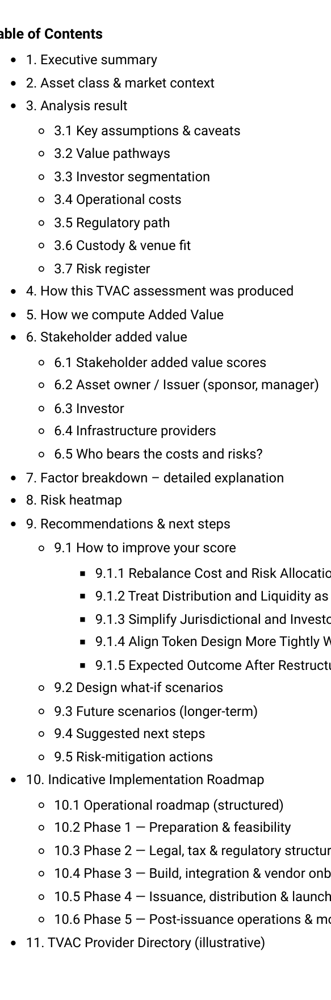

Product proof
Not just a verdict — a concrete, case-specific report
TVAC produces structured output you can share internally: factor logic, explicit assumptions, risk focus, and clear next steps. Click any screenshot to open it full-size.

Report structure (A–Z)
A navigable walkthrough: verdict, scores, sources, pathways, friction & roadmap.
View full size ↗
Factor breakdown (why each score)
Ties scores to your case inputs. Shows what drives upside vs friction.
View full size ↗
Risk heatmap
Shows where to focus mitigation first (highest impact × likelihood).
View full size ↗Decision-grade clarity for risk-averse stakeholders
TVAC is designed for fintech/legal/institutional environments where trust comes from structure and transparency.
- Fixed five-factor rubric + clear verdict logic
- Explicit assumptions and missing inputs
- Concrete recommendations to improve added value
- Shareable output for stakeholder alignment
Want the technical note?
Download the Methodology & Calibration PDF (v1.1).
If the download link fails due to filename differences, ensure the PDF exists as /tvac-methodology-v1.1.pdf in repo root.